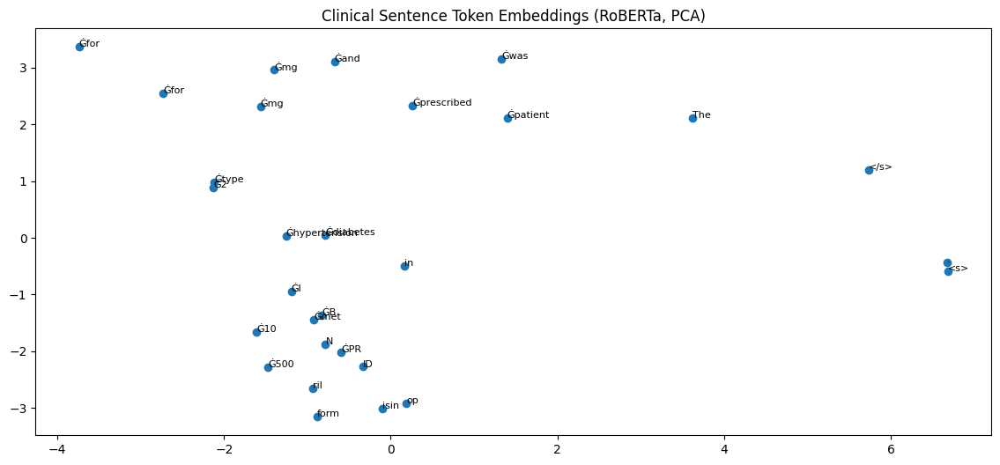

Remark
These lecture notes are in early access and will continue to evolve based on classroom experience and feedback.
4.7. Clinical NLP: Tokenization, Embeddings, and Applications#
4.7.1. Learning objectives#
By the end of this section, you should be able to:
Explain why general-purpose tokenizers struggle with clinical and biomedical text.
Conduct a per-term tokenization audit for drug names, clinical abbreviations, and diagnostic terminology.
Interpret the embedding geometry of a clinical sentence projected to 2D via PCA.
Describe why domain-specific models (BioBERT, ClinicalBERT) are motivated by the tokenization failures of general-purpose tokenizers.
Evaluate LLM generation quality on clinical text completion tasks and assess its suitability for real-world deployment.
Section Goal
This section applies the tokenization and embedding analysis from previous sections to one of the most consequential NLP domains: clinical and biomedical text. You will conduct a systematic fragmentation audit of drug names and clinical abbreviations, visualize the resulting embedding geometry, and understand why general-purpose models fall short — and what domain-specific alternatives such as BioBERT and ClinicalBERT provide. The section closes with an evaluation of LLM generation quality on clinical tasks, connecting tokenization failures to downstream generation errors.
4.7.2. Why Clinical NLP is a High-Stakes Domain#
Electronic health records (EHRs), discharge summaries, radiology reports, and clinical trial documentation contain dense abbreviations, proprietary drug names, diagnostic codes, and Latin medical terminology — all of which fall far outside the training distribution of general-purpose tokenizers built from web text.
Key Term — Electronic Health Record (EHR)
An Electronic Health Record (EHR) is the digitized record of a patient’s medical history, maintained by a healthcare provider. EHRs contain highly heterogeneous text: narrative clinical notes written by physicians in telegraphic style, medication lists with proprietary drug names and dosage instructions, lab results with numeric values and normal ranges, diagnostic codes from controlled vocabularies (ICD-10, SNOMED-CT), and imaging report summaries. NLP systems applied to EHRs must handle this variety of text types, all of which differ sharply from the web-crawled corpora that most general-purpose models were trained on.
Key Term — ICD-10 Codes
ICD-10 (International Classification of Diseases, 10th Revision) is the World Health Organization’s standardized system for classifying medical diagnoses and procedures. Each diagnosis is assigned an alphanumeric code: for example, E11.9 means “Type 2 diabetes mellitus without complications” and I21.9 means “Acute myocardial infarction, unspecified.” ICD codes appear extensively in EHRs and billing records. Tokenizers that fragment these codes into generic alphanumeric subwords lose the structured semantics that make the codes meaningful.
The practical consequences of poor tokenization in clinical NLP are severe:
Drug name fragmentation: A tokenizer that splits
metforminintomet+##form+##inproduces three embedding vectors where one well-formed medical token should exist. A named entity recognition model trained on these fragments will struggle to identify medication boundaries correctly.
Key Term — Named Entity Recognition (NER)
Named Entity Recognition (NER) is the task of identifying and classifying mentions of named entities (people, organizations, locations, dates, quantities, medical terms, etc.) in text and tagging their boundaries. In clinical NLP, NER is used to extract medication names, dosages, diagnoses, procedures, and patient information from unstructured notes. Tokenization quality directly affects NER performance: if a drug name like clopidogrel is split into 4 subword tokens, the NER model must correctly label all 4 fragments as parts of a single medication entity — a harder learning problem than labeling one coherent token.
Abbreviation handling: Clinical text is saturated with abbreviations —
SOB(shortness of breath),CABG(coronary artery bypass grafting),PRN(as needed),BID(twice daily),Hgb(hemoglobin). General-purpose tokenizers may splitSOBintoS+##OB(WordPiece) orS+OB(BPE), producing fragments that appear in many non-medical contexts and carry no clinical abbreviation meaning in their embeddings.ICD codes and Latin terminology: Diagnostic codes (
ICD-10: E11.9,CPT: 99213) and Latin terms (dyspnea,tachycardia,echocardiogram) are systematically rare or absent in web-scraped training corpora.
In clinical NLP deployment — medication extraction, ICD code prediction, clinical note summarization — these tokenization failures translate directly into reduced recall on rare but critical medical entities.
Disclaimer
The practices in this section are for educational purposes only. They demonstrate tokenizer behavior on synthetic clinical examples. No real patient data is used. Language models should never replace clinical judgment or be used for actual medical decision-making without rigorous validation and regulatory approval.
4.7.3. The Three Tokenizers Compared on Clinical Text#
The p406_clinical_nlp_audit_roberta_phi3 and p407_clinical_nlp_application practices compare three production tokenizers on clinical text:
Tokenizer |
Model |
Algorithm |
Vocab |
|---|---|---|---|
Byte-level BPE |
RoBERTa ( |
BPE on 256-byte vocabulary |
50,265 |
tiktoken-style BPE |
Phi-3 Mini ( |
Large-vocab reasoning-optimized BPE |
32,064 |
SentencePiece Unigram |
Flan-T5 ( |
Unigram LM on multilingual C4 |
32,100 |
All three tokenizers were trained primarily on general web text and are therefore baseline cases — a diagnostic exercise that motivates domain-specific alternatives.
4.7.4. Per-Term Fragmentation Audit#
The most revealing analysis for clinical NLP is a per-term audit: for each medical term of interest, how many tokens does each tokenizer produce, and what are they?
4.7.4.1. Tokenization Algorithms at a Glance#
Before running the audit it helps to recall how each algorithm builds its vocabulary, since that directly determines how clinical terms are split.
Byte-Pair Encoding (BPE) starts with individual characters (or bytes) and iteratively merges the most frequent adjacent pair until the target vocabulary size is reached. Formally, at each step the algorithm selects the pair \((a, b)\) with the highest joint frequency \(f(a, b)\) across the corpus and adds the merged symbol \(ab\) to the vocabulary:
Because BPE merges are driven by frequency in the training corpus, medical terms that appear rarely in web text receive few merges and are left heavily fragmented.
SentencePiece Unigram LM (used by Flan-T5) instead begins with a large candidate vocabulary and prunes it. Each token \(x_i\) is assigned a log-probability \(\log p(x_i)\), and the tokenizer selects the segmentation \(\mathbf{x}^* \) that maximises the total log-likelihood:
Tokens that do not improve likelihood on the training corpus are removed until the vocabulary reaches its target size. Again, rare clinical tokens are unlikely to survive.
Quantifying fragmentation — the Token-per-Term Ratio (TTR)
A simple metric for comparing tokenizers on any term set \(T\) is the average number of tokens per term:
A TTR of 1.0 means every term is represented as a single token (ideal). The audit below will let you compute a TTR across the clinical term set for each tokenizer.
metformin:
RoBERTa : 3 token(s) — ['met', 'form', 'in']
Phi-3 : 3 token(s) — ['▁met', 'form', 'in']
Flan-T5 : 3 token(s) — ['▁met', 'form', 'in']
clopidogrel:
RoBERTa : 5 token(s) — ['cl', 'op', 'id', 'og', 'rel']
Phi-3 : 5 token(s) — ['▁c', 'lop', 'id', 'og', 'rel']
Flan-T5 : 6 token(s) — ['▁', 'clo', 'pid', 'o', 'gre', 'l']
CABG:
RoBERTa : 3 token(s) — ['C', 'AB', 'G']
Phi-3 : 3 token(s) — ['▁C', 'AB', 'G']
Flan-T5 : 2 token(s) — ['▁CA', 'BG']
SOB:
RoBERTa : 2 token(s) — ['S', 'OB']
Phi-3 : 2 token(s) — ['▁SO', 'B']
Flan-T5 : 2 token(s) — ['▁SO', 'B']
tachycardia:
RoBERTa : 4 token(s) — ['t', 'achy', 'card', 'ia']
Phi-3 : 5 token(s) — ['▁t', 'ach', 'y', 'card', 'ia']
Flan-T5 : 6 token(s) — ['▁', 't', 'a', 'chy', 'cardi', 'a']
echocardiogram:
RoBERTa : 4 token(s) — ['ech', 'oc', 'ardi', 'ogram']
Phi-3 : 5 token(s) — ['▁e', 'ch', 'oc', 'ardi', 'ogram']
Flan-T5 : 3 token(s) — ['▁echo', 'cardi', 'ogram']
PRN:
RoBERTa : 2 token(s) — ['PR', 'N']
Phi-3 : 2 token(s) — ['▁PR', 'N']
Flan-T5 : 2 token(s) — ['▁PR', 'N']
dyspnea:
RoBERTa : 4 token(s) — ['d', 'ys', 'p', 'nea']
Phi-3 : 4 token(s) — ['▁d', 'ys', 'p', 'nea']
Flan-T5 : 5 token(s) — ['▁dys', 'p', 'n', 'e', 'a']
Representative results reveal a consistent pattern:
Term |
RoBERTa |
Phi-3 |
Flan-T5 |
|---|---|---|---|
|
3 |
3 |
4 |
|
4 |
4 |
5 |
|
3 |
2 |
3 |
|
2 |
2 |
3 |
|
4 |
3 |
4 |
|
5 |
4 |
6 |
Key observations:
No tokenizer represents any of these clinical terms as a single token. All are fragmented into subword pieces that carry no clinical meaning individually.
Phi-3 tends to produce slightly fewer fragments for longer drug names, likely due to its technically-oriented training corpus including some scientific literature.
Abbreviations (
CABG,SOB) are handled particularly poorly — the resulting subwords have no relationship to the abbreviation’s clinical meaning.Longer Latin-derived terms (
echocardiogram,tachycardia) are fragmented into 3–6 pieces even though they represent single clinical concepts.
4.7.5. The Case for Domain-Specific Models#
The fragmentation patterns above motivate the development of domain-specific language models whose tokenizers and pre-training are adapted to biomedical and clinical text:
BioBERT (
dmis-lab/biobert-v1.1): BERT pre-trained additionally on 18 GB of PubMed abstracts and 4.5 GB of PMC full-text articles. Its vocabulary and pre-training distribution bring it much closer to biomedical literature, reducing fragmentation of medical terms.ClinicalBERT (
emilyalsentzer/Bio_ClinicalBERT): Further pre-trained on MIMIC-III clinical notes (over 2 million patient discharge summaries), adapting the model to the specific language patterns of clinical documentation.BioGPT (
microsoft/biogpt): A GPT-style decoder pre-trained on PubMed abstracts, enabling biomedical text generation and question answering.
Why Domain-Specific Pre-training Helps
Domain-specific models like BioBERT improve over general-purpose BERT in two reinforcing ways. First, vocabulary coverage: because the model was trained on biomedical corpora, the tokenizer encountered many medical terms frequently enough for the BPE merge rules to produce compact, single-token representations of common drugs, diseases, and procedures. Second, contextual representations: the transformer weights learn to encode relationships specific to biomedical text — for example, that “metformin” co-occurs with “type 2 diabetes” and “glucose” rather than with the general contexts of its constituent subwords “met” and “form”. These two improvements compound at every layer of the NLP pipeline.
The practices in this section establish a baseline with general-purpose tokenizers to demonstrate why domain adaptation is necessary — the fragmentation audit serves as a quantitative motivation for reaching beyond general-purpose tools.
4.7.6. Embedding Geometry of Clinical Text#
After tokenization, the contextualized embeddings of a clinical sentence reveal how the model has structured the medical concepts in embedding space.
4.7.7. Contextualized Embeddings and PCA#
Before examining the code, recall what a contextualized embedding is and why projecting to 2D is informative.
4.7.7.1. Contextualized vs. Static Embeddings#
A static word embedding (e.g., Word2Vec) assigns each word type a single fixed vector regardless of context. A contextualized embedding produced by a transformer assigns each token occurrence a vector that depends on all surrounding tokens via self-attention. Formally, for token \(t_i\) in a sequence of length \(n\), the embedding at layer \(l\) is:
We use the last hidden state \(\mathbf{h}_i^{(L)}\) as the token’s contextual representation. This vector lives in a high-dimensional space (768 dimensions for RoBERTa-base).
4.7.7.2. Why PCA?#
Principal Component Analysis (PCA) finds the directions of maximum variance in the data. For a matrix \(\mathbf{X} \in \mathbb{R}^{n \times d}\) of token embeddings, PCA computes the eigendecomposition of the covariance matrix and projects the data onto the top-\(k\) eigenvectors:
Setting \(k = 2\) allows us to plot the tokens on a 2D plane. While much information is lost, the projection preserves the dominant structure of the embedding space — tokens that are similar in 768D tend to appear close together in 2D.
Key Term — Principal Component Analysis (PCA)
PCA is a linear dimensionality reduction technique that transforms a high-dimensional dataset into a lower-dimensional representation by projecting onto the directions of greatest variance. In the context of token embeddings, it is used as a visualization tool: similar tokens cluster together, while dissimilar ones appear far apart. PCA does not change the model or the embeddings themselves — it only changes how we view them.
The code below extracts the last-hidden-state embeddings for every token in a clinical sentence and projects them to 2D using PCA for visualization.
WARNING: All log messages before absl::InitializeLog() is called are written to STDERR
I0000 00:00:1780366610.434541 2798 cpu_feature_guard.cc:227] This TensorFlow binary is optimized to use available CPU instructions in performance-critical operations.
To enable the following instructions: AVX2 AVX512F FMA, in other operations, rebuild TensorFlow with the appropriate compiler flags.
Some weights of RobertaModel were not initialized from the model checkpoint at roberta-base and are newly initialized: ['pooler.dense.bias', 'pooler.dense.weight']
You should probably TRAIN this model on a down-stream task to be able to use it for predictions and inference.

In the 2D projection, one typically observes:
Drug name fragments cluster near each other (the subwords of
metforminappear adjacent because they were derived from the same word).Dosage information (
500,mg,BID) clusters separately from diagnosis terms.The special tokens
<s>and</s>appear as outliers.Structurally, the layout reflects the statistical co-occurrence patterns from the general web corpus rather than clinical meaning — drug names and disease names do not cluster together as they would in a biomedically-trained embedding space.
4.7.8. Generation Quality on Clinical Tasks#
LLM generation on clinical text is evaluated differently from general-purpose text because errors can have safety-critical consequences. Before reading the outputs, it helps to have a structured evaluation framework.
4.7.8.1. Evaluation Dimensions#
Dimension |
Description |
What to look for |
|---|---|---|
Clinical Accuracy |
Does the output reflect correct medical facts? |
Wrong drug interactions, incorrect dosages, misattributed symptoms |
Safety Framing |
Does the model add appropriate disclaimers? |
Referral to a physician, warnings against self-diagnosis |
Terminology |
Is the vocabulary appropriate to the audience? |
Clinical terms for a professional audience; plain language for a patient |
Fluency |
Is the text coherent and grammatically correct? |
Hallucinated sentences, repetition, incoherent transitions |
4.7.8.2. A Simple Accuracy-Safety Score#
For a quick numerical comparison across models you can rate each output on a 1–5 scale for accuracy (\(A\)) and safety (\(S\)), then compute a combined score that weights safety more heavily — reflecting the asymmetry of clinical risk:
This weighting is illustrative; real clinical NLP evaluation uses expert annotation and task-specific benchmarks (e.g., MedNLI, BioASQ, n2c2 shared tasks).
The practices also evaluate how well general-purpose LLMs handle two clinical text generation tasks:
Clinical note completion: “The patient presented with chest pain and shortness of breath. ECG revealed…”
Lay health explanation: “Explain to a patient why they need to take metformin every day.”
Key evaluation dimensions:
Accuracy: Does the model produce clinically correct content?
Safety framing: Does the model add appropriate medical disclaimers?
Terminology: Does the model use appropriate clinical vocabulary (or fall back to lay terms)?
Tokenization effects: Do fragmented drug names or abbreviations cause the model to generate incorrect continuations?
General-purpose LLMs can produce plausible-sounding clinical text but are unreliable for actual clinical decision support. Phi-3’s reasoning-oriented training tends to produce more structured, medically coherent outputs than general-purpose models of similar size, while Flan-T5’s encoder-decoder architecture excels at controlled text transformation (rewriting clinical notes in lay language) rather than open-ended generation.
4.7.9. Exercises and discussion#
Fragmentation audit expansion Extend the per-term fragmentation audit to ten additional clinical terms of your choice: include at least two abbreviations, two drug names, two diagnostic codes, and two anatomical terms. For each term, identify which tokenizer produces the fewest fragments. Is there a pattern in which types of clinical terms each tokenizer handles best?
BioBERT comparison If you have access to BioBERT (
dmis-lab/biobert-v1.1), run the same per-term fragmentation audit and compare the results to the three general-purpose tokenizers. For which terms does BioBERT produce fewer fragments, and why? What does this reveal about the relationship between pre-training corpus and tokenizer vocabulary?Clinical generation evaluation Run the two clinical generation tasks (note completion and lay explanation) through a general-purpose LLM of your choice. Evaluate each output on three criteria: (a) clinical accuracy, (b) appropriate safety framing (disclaimers, referral to professionals), and (c) correct use of medical terminology. Identify one failure mode in each output and explain its likely cause.